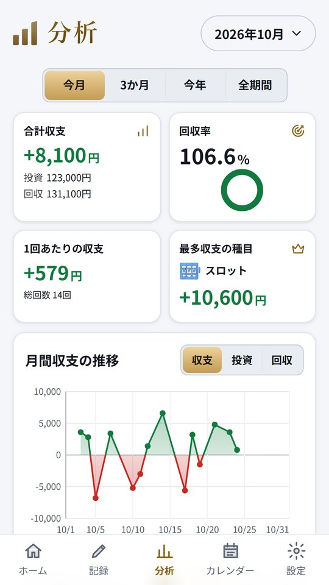

カチマケ › 年間収支と確定申告
パチンコ・スロット・競馬の年間収支のつけ方と、確定申告について国税庁のページに書かれていること
2026年10月26日
このページは、国税庁のページに書かれている内容を、そのまま整理したものです。税金がかかるかどうか、申告が必要かどうかは、収入の状況や遊び方によって変わります。自分の場合どうなるかは、国税庁のページを読んだうえで、税務署や税理士に確かめてください。このページの内容は税の助言ではありません。
年末が近づくと、「1年でいくら使って、いくら戻ったのか」が気になってくる人は多いと思います。確定申告の話題を目にして、そもそも自分の数字を把握していないことに気づく人もいるはずです。まずは1年分の記録の残し方を書き、そのあとで国税庁のページに書かれていることを整理します。
1年分の記録に残しておきたいこと
年間の収支は、1回ごとの記録を足し上げて出します。月ごとのメモを足していくやり方だと、書き方が途中で変わった月があったときにずれます。1回ごとに次のものが残っていれば、あとからどの区切りでも合計できます。
日付 / 種目(パチンコ・スロット・競馬など) / 店や競馬場 / 使った額 / 戻った額
競馬などは、レースと券種も
大事なのは、負けた日や外れた馬券も含めて全部を残すことです。当たった日だけの記録では、1年の本当の数字は出ません。それから、1回ごとの払戻の額と、そのときに使った額は分けて残しておくと、あとで中身を聞かれたときに説明しやすくなります。
パチンコ・スロットの記録の残し方は収支表のつけ方、競馬は競馬の収支のつけ方にくわしく書いています。
国税庁のページに書かれていること(一時所得)
国税庁のタックスアンサー「No.1490 一時所得」には、一時所得にあたるものの例として、競馬や競輪の払戻金が挙げられています。そこには「営利を目的とする継続的行為から生じたものを除きます」という但し書きが付いています。
同じページには、一時所得の金額の計算のしかたが次のように書かれています。
総収入金額 − 収入を得るために支出した金額 − 特別控除額(最高50万円)= 一時所得の金額
「収入を得るために支出した金額」については、その収入を生じた行為をするため、または収入を生じた原因の発生に伴い「直接要した金額に限ります」と書かれています。また、一時所得の金額は、その2分の1に相当する金額を給与所得などほかの所得の金額と合計して総所得金額を求め、そのうえで税額を計算する、と説明されています。
パチンコ・パチスロについては、このページに名前は出てきません。どう扱われるかを知りたい場合は、税務署に確かめるのが確実です。
ページの表示は「令和8年4月1日現在法令等」です(2026年10月26日に確認)。法令や取り扱いは変わることがあるので、申告の前には必ず最新のページを見てください。
国税庁のページに書かれていること(給与所得者の申告)
タックスアンサー「No.1900 給与所得者で確定申告が必要な人」には、大部分の給与所得者は年末調整で納税が済むため確定申告は不要だと書かれています。そのうえで、申告が必要な人の一つとして、給与を1か所から受けていて、その全額が源泉徴収の対象になる人のうち、給与所得と退職所得以外の所得の金額の合計が20万円を超える人が挙げられています。
ここでいう「所得の金額」がどう計算されるかは、上の一時所得の計算と合わせて考える必要があります。自分の数字がどこに当てはまるかは、国税庁のページか税務署で確かめてください。
参照した国税庁のページ
No.1490 一時所得(国税庁)
No.1900 給与所得者で確定申告が必要な人(国税庁)
数字をそろえておく理由
申告が必要かどうかにかかわらず、1年分の数字がそろっていると、自分の遊び方を落ち着いて見直せます。1年で使った額の合計を一度見ておくだけでも、来年の上限をどれくらいにするかを決めやすくなります。
カチマケは、パチンコ・パチスロ・競馬・競輪・ボート・オートの記録を1つにまとめる収支アプリです。ホームに今月と今年の収支が出ていて、分析の画面では今月・3か月・今年・全期間を切り替えて、使った額・戻った額・回収率を見られます。1年分の記録は CSV に書き出して、表計算で開くこともできます(長い期間の分析と CSV の書き出しは完全版の機能です)。月の負けの上限を決めておくと、8割に近づいたときにホームでお知らせします。記録はスマホの中だけに保存し、税の計算はしません。

Android 版です。18歳以上の方向けの収支記録アプリで、賭け事そのものは提供しません。パチンコ・パチスロは18歳未満、公営競技の投票は20歳未満の方は法律で禁止されています。
https://play.google.com/store/apps/details?id=jp.kachimake.app